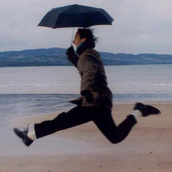
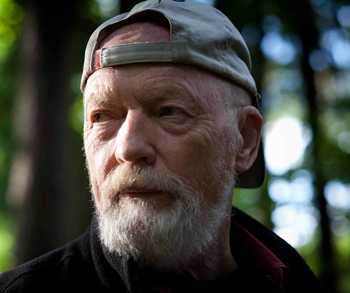
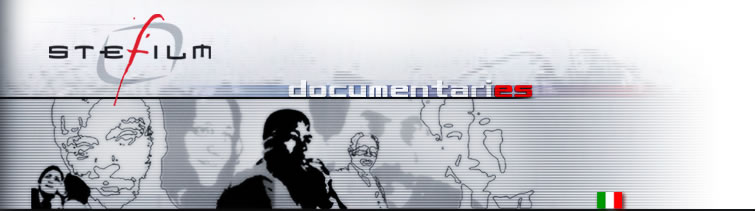
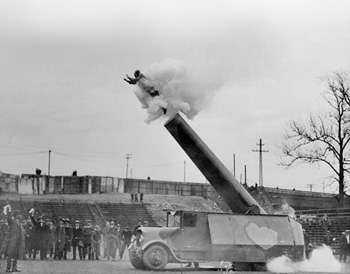

Director
Multi Award Winning Italian film director and poet. Born in Turin, Alessandro Negrini defines himself a Film Director by mistake. He spent much of the late 1990s travelling Europe writing and in 2001 he moved to Northern Ireland. Alessandro Negrini's documentaries and short films have garnered a remarkable international raft of awards in festivals around the world. Alessandro Negrini's most acclaimed work has dealt with social exclusion and resistance. His works combine documentaries, fiction and poetry. His last documentary ‘Paradiso’ was commissioned by BBC and has won 15 international awards.
Among Alessandro Negrini's films:
Mad Portraits (1998), inspired by the work of R.D. Laing English psychiatrist, campaigner and poet and the 1980s’ Franco Basaglia’s law reform of the oppressive Italian psychiatric health system; The short movie followed the lives of patients in an Italian mental health institute and how the closure of the hospital changed their lives.
‘Priority Mail’, (2000) a play based on epistolary material from various intellectuals and artists from England, Hungary and Italy living during Nazism and Fascism. The show toured Italy on the following year.
‘The House of Phrases’ (2002)Winner as Best International Short Film Online at the Foyle Film Festival, Derry, selected in several International Festival.
‘Lies and Waves’ (2003) a film on the thin border between madness and normality. Winner at Anteprima Spazio Torino Film Festival, and Best Short Film at Augsburg International Film Festival, Best Script prize at Modena Short Film Festival. Special Screening at the Havana Film Festival, Cuba.
‘Memories of Ice and Fire’ (2008)Opening show of the Winter Olympic Games in Turin, Commissioned by the Winter Olimpic Games Company. The Show is a visual journey between the two essential elements of life, ice and fire.
‘Paradiso’ (2010)A feature documentary on the lives of The Fountain estate in Derry, Northern Ireland. Produced by Margo Harkin (Besom Productions) and commissioned by BBC.
Winner of 15 International Awards in Festivals around the world, including Best Documentary Prize at Slow Film Festival of Eger (Hungary) and Best Documentary Award at Global Cinema Festival, Indore (INDIA), Audience Award at Wurzburg International Film Festival (Germany) and Best Documentary Award at Dhaka International Film Festival(Bangladesh), Best Documentary at Arcipelago Rome Film Festival (Italy), Best Film at We The People Film Festival, London.
Alessandro Negrini has been selected twice at the prestigious SOURCES 2 European Script Development Workshop, mentored by international Script Editors David Wingate and Michael Seeber. Alessandro Negrini is a regular judge at international film festivals, in Italy, Norway and Ireland.
Director of Photography
Odd Geir Sæther (born 24 February 1941) is a Norwegian cinematographer and television director who has worked in many Norwegian and international feature films, commercials and informational videos.
Sæther debuted as a camera assistant in 1960 on the film Petter from Ruskøy, and as chief photographer in Arne Skouen Guard records in 1965. In the same period he also photographed the Journey to the Sea (1966) and Muskanter (1967). Through major tasks in the 1970s he became one of the leading cinematographers.
He made his debut as a cinematographer on TV in 1970 where he had photos on Television Theatre Selma broke. After that he had photos on yhe Tv Series Alberta (1972) and Edvard Munch (1974). In the the same decade, he worked in two Sverre Udnaes films: Lady Inger (1975) and Moment (1977).
He also had photos of several foreign productions, including the famous Swedish action thriller Man on the Roof (1976), the German TV production Keiner kann was dafür (1978), the multinational war documentary Resan (1987), and the French La commune (Paris, 1871) (2000). In 2006 he had photographic assignments at David Lynch's drama mystery Inland Empire.
Sæther has also organized missions, including the film comedy The green elevator from 1981 and several Television Theatre oppsetinger in the period 1979-1981.
In the early 1960s he was involved in several of the so-called housewife films, which were humorous instructional videos.
Regissør
Fotograf
Film Producers
Stefilm is a member of the Steering Committee of Discovery Campus. Stefano was chairman of the European Documentary Network (EDN); he is currently the national coordinator of INPUT – Television in the PUblic INterest and director of Documentary in Europe.
Stefilm’s productions, mostly developed with support from the European Union’s MEDIA Programme, are largely international coproductions. To date Stefilm has worked with more than 40 television networks across the globe, and with more than 50 partners, which include distributors, independent production companies and institutions.
Stefilm has recently expanded into the fields of training and distribution. Its three partners now share their professional know-how in close conjunction with several different training institutions in Italy and abroad.
In 2005 the company set up Stefilm Development Campus, a programme aimed at developing writing skills and documentary film development methods. Edoardo Fracchia is director of the Campus.
Elena Filippini is in charge of distribution. The company has a vast catalogue of work distributed by international companies and can provide more than 200 hours of documentary programmes. At the same time, Stefilm is constantly looking out for new Italian work to promote at an international level.
Film Producers
 Pang Produksjoner AS was founded in 2001 to primarily make documentaries for Norwegian television. Since them we have produced documentaries that have been shown on television and on film festivals around the globe.
In the last few years -production have been expanded to also include short films, animation, commercials and corporate video.
Our projects always start with three questions: What? How? and Why? The first two questions can be answered quite easily but the real challenge is in the third question: Why? It is only when and if we find that answer that we start production. But when we have an answer to all three questions we go all in. Our philosophy is based on creating a creative environment for every single project, small or big. The story is in the center and quality is the binder between vision and realization.
Our goal for the future is to keep our integrity at the same time as we broaden our horizon!